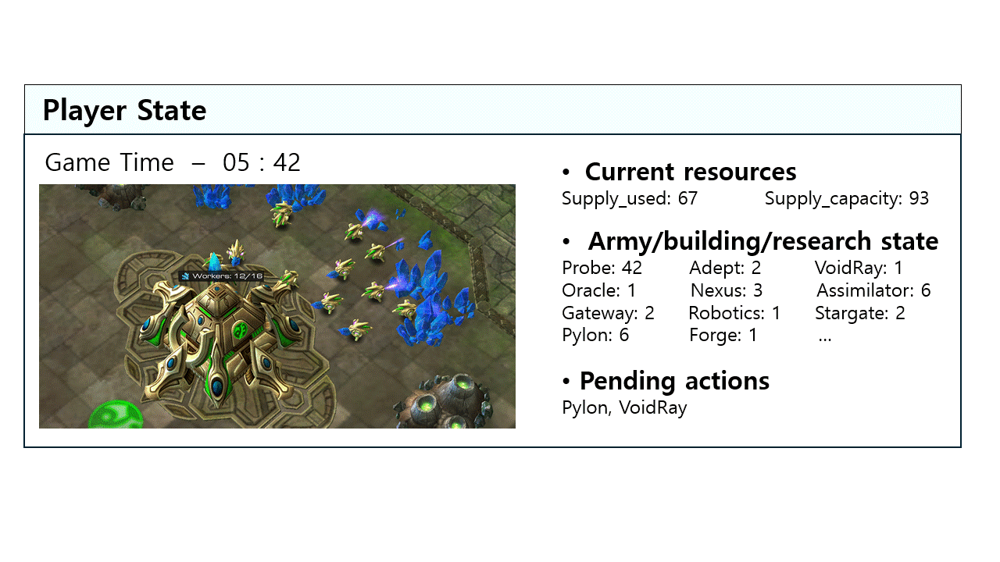
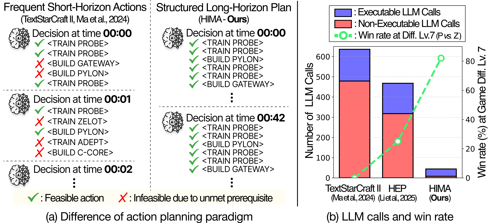
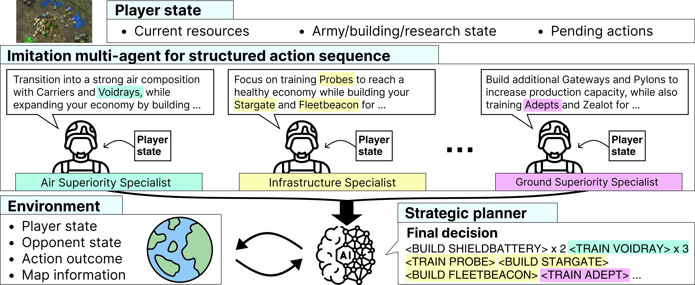
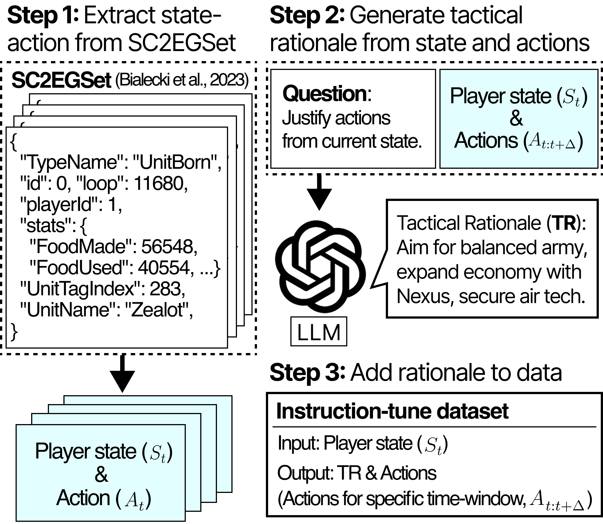
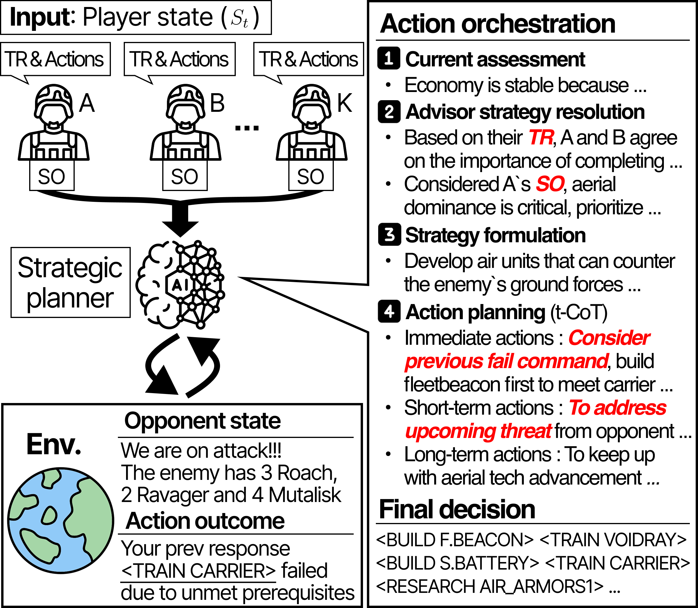
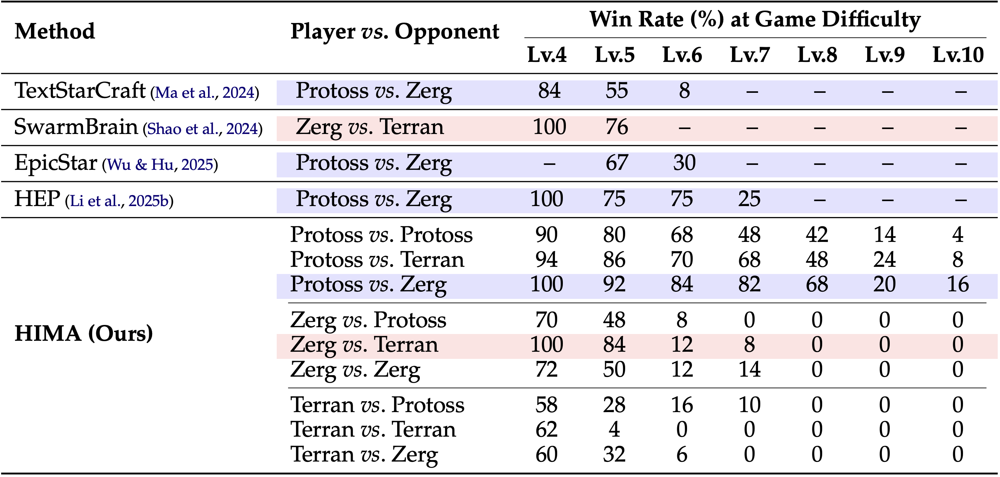
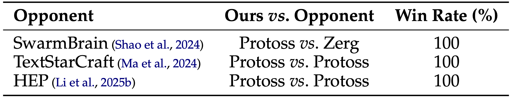

Insufficient domain knowledge and frequent short-term action generation lead to inefficient and ineffective long-term planning during game play.

tl;dr. Multiple fine-tuned imitation agents (1.5B models) trained on our collected human demonstrations generate long action proposals, which a strategic planner (e.g., GPT) orchestrates into adaptive strategies.

We use human demonstration data from professional StarCraft II replays to train each specialized agent on distinct strategic patterns through supervised fine-tuning. Each agent generates structured action sequences spanning multiple timesteps (approximately 3 minutes), accompanied by tactical rationales that explain why these actions suit the current game state. By clustering the demonstration data based on unit compositions, we create agents specialized in different strategies—such as air superiority, ground forces, or balanced approaches. The Strategic Planner meta-controller then orchestrates these diverse agent proposals into a unified, adaptive plan that responds to real-time battlefield conditions. This hierarchical approach significantly reduces decision-making frequency while maintaining strategic coherence and adaptability in complex RTS environments.

Dataset for structured action sequenceThe Strategic Planner orchestrates action proposals from multiple specialized agents by considering real-time environmental contexts including opponent state and previous action outcomes. We employ a four-stage process: assessing current game state, resolving conflicting strategies from different agents using Nominal Group Technique, formulating a unified strategy, and planning actions through temporal Chain-of-Thought (t-CoT). The t-CoT mechanism breaks down decisions into immediate actions (addressing failed commands), short-term responses (countering upcoming threats), and long-term strategic goals (maintaining technological advancement). Environmental feedback, such as enemy attacks or failed prerequisites, triggers immediate re-evaluation and adaptation of the current plan. This orchestration ensures that agent proposals are dynamically adjusted to battlefield conditions while maintaining strategic coherence across different time horizons.

Environment-aware action orchestration


@inproceedings{ahnKC25,
author = {Ahn, Daechul and Kim, San and Choi, Jonghyun},
title = {Society of Mind Meets Real-Time Strategy: A Hierarchical Multi-Agent Framework for Strategic Reasoning},
booktitle = {COLM},
year = {2025},
}